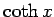

Inhalt Index DeskTop Bronstein

 Integralrechnung Unbestimmtes Integral Integration weiterer transzendenter Funktionen
Integralrechnung Unbestimmtes Integral Integration weiterer transzendenter Funktionen


Integrale mit Hyperbelfunktionen, die die Funktionen und  im Integranden enthalten, werden gewöhnlich berechnet, indem die Hyperbelfunktionen durch Exponentialfunktionen ersetzt werden. Die meist auftretenden Fälle werden mit Methoden integriert, wie sie bei den trigonometrischen Funktionen zur Anwendung kommen.